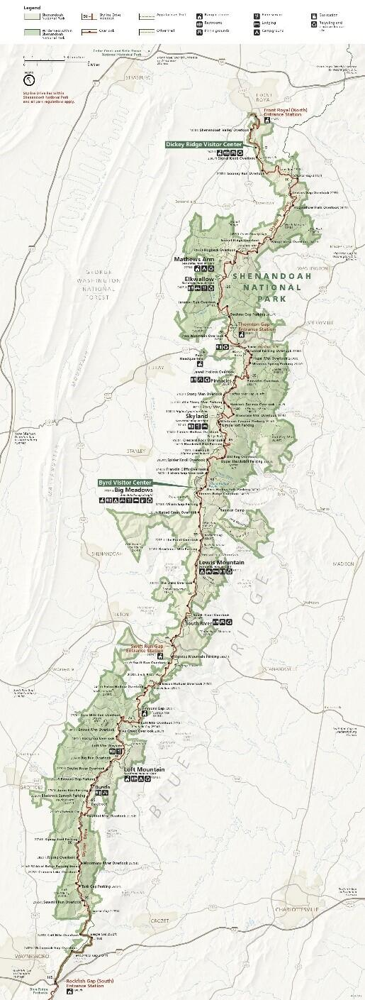
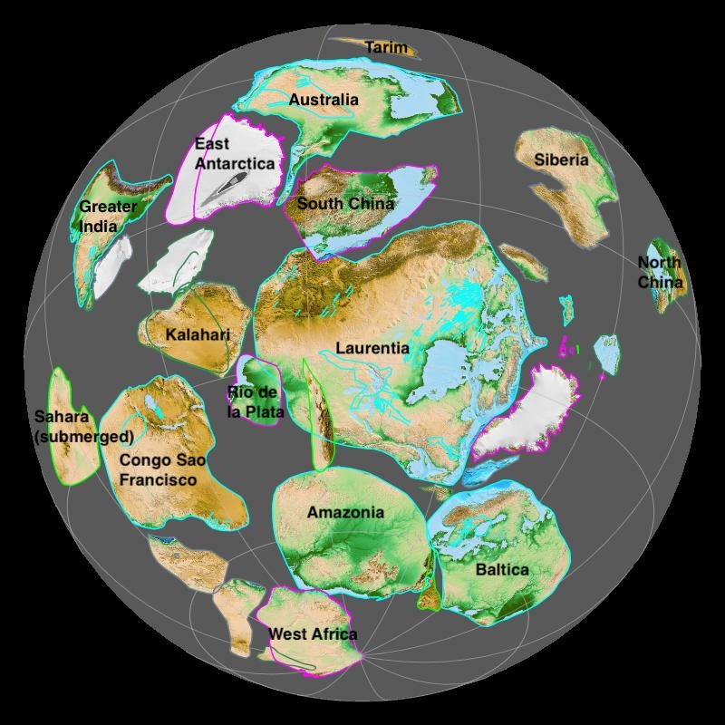

Over a billion years of collision, eruption, burial, and erosion — the rock record preserved in Shenandoah National Park.

The oldest rocks found in Shenandoah National Park are over 1.2 billion years old. Many of these oldest rocks can be found on the mountain Old Rag. They are granite and gneiss rocks. All of these rocks were formed during the Grenville orogeny. This was when the supercontinent Rodinia was smashing together.

The next phase of the mountain range is when Rodinia started to break apart. When Rodinia broke apart this caused massive eruptions that caused the formation of greenstone rock. This happened between 750–570 million years ago. It was during this phase that Compton Peak and Bear Fence Mountain are formed.
Between 570 and 470 million years ago the mountain range just collected sediment which formed sandstone, shale, and limestone. During this time the range lay on a passive continental ridge just like it does today.
Between 470 and 260 million years ago there were three different orogenies. Orogenies are when mountains are formed. The first was the Taconic, then Acadian, and then finally the Alleghenian. This last one happened as the African continent collided with the North American continent. During this time the mountains rose up to about 20,000 feet. This is comparable to the Rockies in modern day.
Around 200 million years ago Pangea broke apart and the Appalachians stopped growing. During the time in between now and then the mountain range has been slowly eroded. Rivers slowly carved softer rock away, exposing older harder rocks like the granite found on Old Rag. This erosion causes the mountains to shrink and lose much of the past height that they once had.
The core of the mountain range’s anticlinorium is made out of Mesoproterozoic granite and granodioritic gneiss. This is called Old Rag Granite around the region. These rocks all formed during the Grenville orogeny and then later deformed during the Paleozoic era. Oftentimes you can see these rocks sticking out on rock faces on the mountains.
The signature rock of Shenandoah National Park is meta basalt or greenstone. It is mostly made out of chlorite, epidote, albite, and actinolite. These elements also give the rock its green color. These flows are usually about 500 meters thick across the mountain range.
The height of the Appalachians at their peak is generally debated, but some scholars believe that the mountains had elevation of 4,000 to 6,000 meters tall at their peaks. This was due to the continental collisions that took place along the pre-North American continent over millennia. The Shenandoah section was probably not one of the higher parts — the higher parts are probably found in the Carolinas and Georgia.
The reason that the mountains are a lot smaller today is due to erosion over millennia. Since the mountains are over a billion years old, water, wind, and air have had a lot of time to break down the mountains into smaller and smaller pieces. Many of the valleys found in the mountain range were made by the erosion that the rivers cause.
The region is not known to have many earthquakes due to where the mountain range sits on the plate. The mountain range sits in the interior of the North American plate. The faults that built the mountain range are now over 300 million years old and are deeply buried and mostly locked. They can still slip occasionally because of the slow buildup of regional stress. We saw a slip like this in 2011. Because the crust along the eastern United States is older and colder, seismic waves attenuate less and travel farther than ones originating in the west coast.
The mountain range was never glaciated directly. The ice sheets always stopped well north of the mountain range, meaning the mountains were never torn apart by glaciers. It did experience periglacial conditions during the ice ages. This means that the mountains experienced intense freezes and thaws. These freezes and thaws caused distinct boulder fields to form.
The mountain range was a historic place to mine iron. Some other minerals were also found which include manganese and some copper.
Roc
Hey, I’m Roc — a piece of Old Rag Granite come to life. Want a fun fact about Shenandoah?